User manual: finding family privately after the hurricane
Demonstration with fictional data. This is not an emergency service and nobody monitors it. Do not enter real names, places or personal details. In an emergency, contact local emergency services.
Online demo: https://reconnect-web.onrender.com Free hosting: after 15 quiet minutes you first see a Render page saying the service is waking up. Wait up to about a minute and the app opens by itself.
Which part should I read?
I am…
Read
someone with a phone or computer
Part 1 (page 3)
someone without a phone, account or ID, at a shelter
Part 2
shelter staff or a volunteer
Part 3
the person who sets up staff accounts (operator)
Part 4
Short words used in this manual are explained at the end ("Words used").
How Reconnect works, in one page
No public list of people. Nobody can browse or search who is registered.
Requests are private. Someone looking for you sends a request. You decide whether to answer, and nobody is told if you decline or block.
You choose what to share, with one person. A message only, the approximate area of one check-in, or the named shelter of one check-in, for 24 hours or 7 days. You can stop sharing at any time.
History, not tracking. A check-in says where you were at a stated time. It never shows where you are now. No GPS is used.
No phone or ID needed. Shelter staff can do everything with you, using a private secret you keep on paper.
Signing in proves only that you control the account, not who you are or who your family is.
What Reconnect cannot do: find someone who never registered or checked in, prove anyone is safe, recall copies (such as screenshots) someone already made, or decide who is a child's guardian.
The three ways to reach someone
You have…
How it works
their contact code
Enter the code. The request reaches them privately.
no code, but a good guess where they are
Ask one shelter's team to look, with clues. The team only proposes people who agreed to this kind of matching; the person still decides.
no phone at all
Ask staff at your shelter to send the request for you (Part 2).
Part 1 · With a phone or computer
After you sign in, the Dashboard shows everything you can do. The menu at the top is the same on every page.
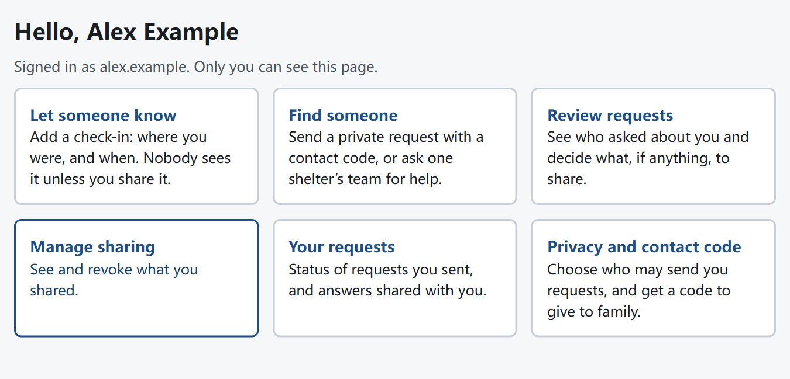
1.1 Create an account
Choose Create account.
Pick a username and a password (at least 10 characters). Add a name others will see; a nickname is fine. No email, phone or ID is needed.
Write down the recovery secret. It is shown only once and is the only way back in if you forget your password.
Tick "I have written down my recovery secret" and choose Continue.
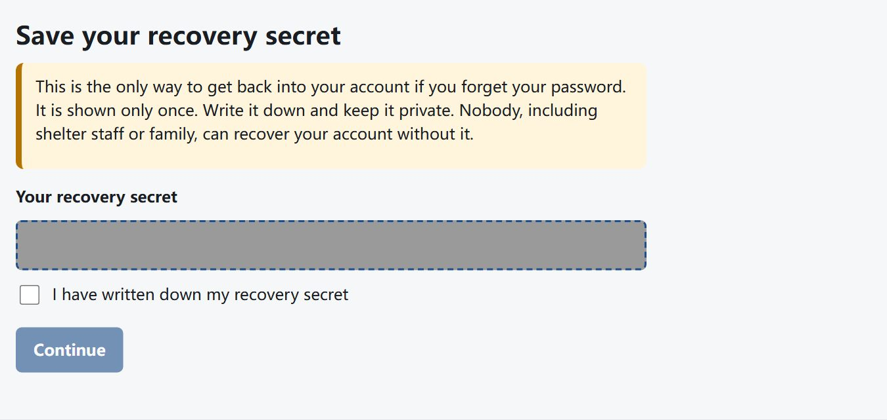
The recovery secret (hidden here) appears once, right after you sign up.
1.2 Sign in and sign out
Choose Sign in, enter your username and password.
On a shared or shelter computer, always choose Sign out when you finish. After signing out, going back in the browser shows nothing private.
You are signed out automatically after 30 minutes without activity.
1.3 Add a check-in (where you were, and when)
Go to Dashboard → Let someone know (or "Your check-ins") and choose Add a check-in.
Choose At a shelter or In an area, then pick it from the list.
Check the time ("When were you there?"). Earlier times are fine.
Optionally add a status, then Save check-in.
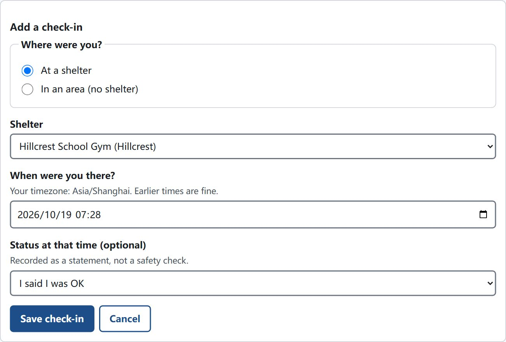
Nobody sees a check-in unless you share that one check-in with one person.
Use "I have left this place" when you move on, and "Correct this report" to fix a mistake. Reports older than 24 hours are marked "Older report".
1.4 Get your contact code and choose who may contact you
Go to Dashboard → Privacy and contact code.
Choose Create contact code. Write it down and give it only to people you want to hear from (say it, write it on paper, or ask staff to pass it on).
If the wrong person has it, choose Replace contact code; the old one stops working.
Under "Who can send you requests" choose Closed, Contact code only (default) or Contact code and shelter-assisted matching, then Save setting.
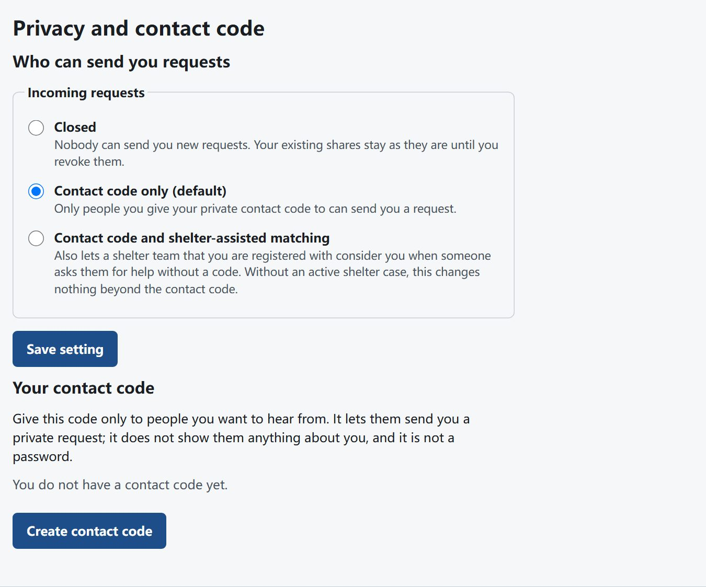
A contact code lets someone send you a request. It shows them nothing about you and is not a password.
1.5 Look for someone who gave you their contact code
Go to Find someone. Keep "With their contact code".
Type the code (dashes and spaces are fine) and a short introduction saying who you are.
Check "What they will see if it reaches them", then Send private request.
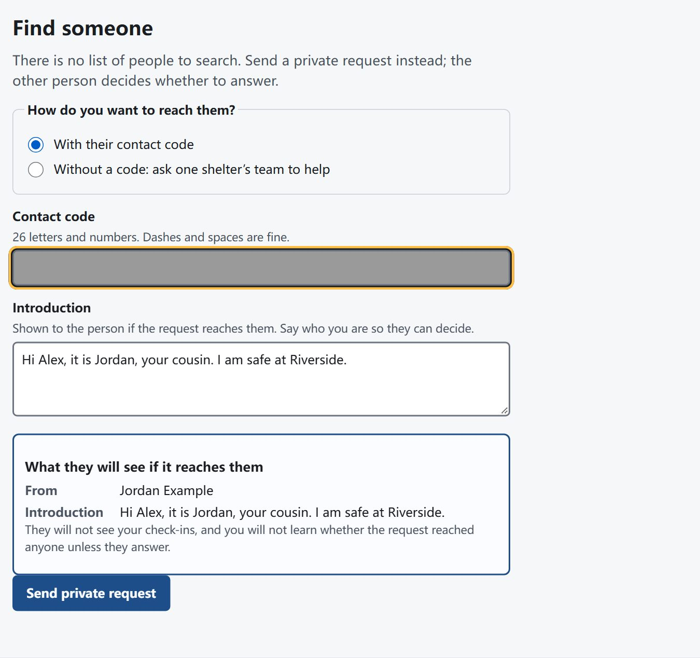
For everyone's safety you are never told whether a code matched someone or whether a request was read.
1.6 Look for someone without a code
In Find someone, choose Without a code: ask one shelter's team to help.
Add clues the team can compare (a nickname, what they wore, a relative's name). Never add ID, medical or legal details.
Choose the one shelter where they might be and agree that the clues may be shared with that shelter's team.
Write your introduction and send.
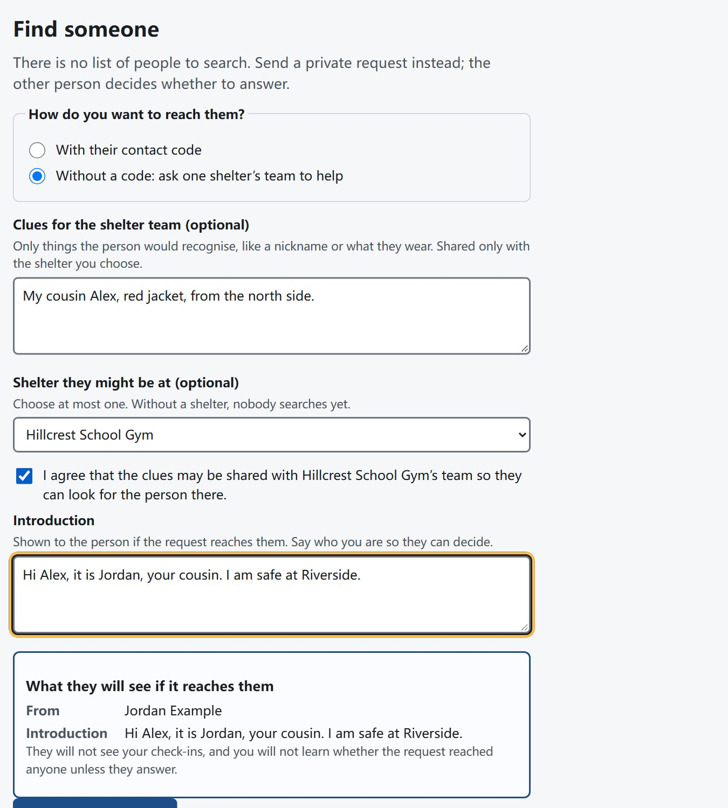
If the guess is wrong or the person did not opt in, the request simply stays unanswered.
1.7 Check on requests you sent
Go to Your requests. Each request shows one of these:
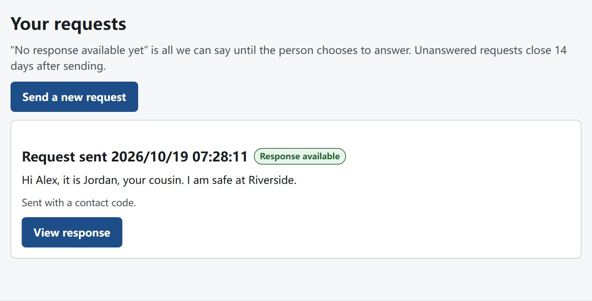
No response available yet
Nothing to show. This is all we can ever say before an answer; it never means "not found" or "declined".
Response available
Choose View response to read what they shared with you.
Response unavailable
They stopped sharing, or the sharing period ended.
Expired
Unanswered requests close 14 days after sending.
Use Withdraw request if you no longer need it.
1.8 Answer a request
Go to Requests for you. Read who is asking. Names are their own choice and not verified.
Choose Answer, Decline privately or Block this sender. The sender is never told about a decline or a block.
To answer, pick what to share: a message only, the approximate area of one check-in, or the named shelter of one check-in.
Choose the check-in, a message, an optional short note, and 24 hours or 7 days.
Read Exactly what … will see, then Review and share and confirm.
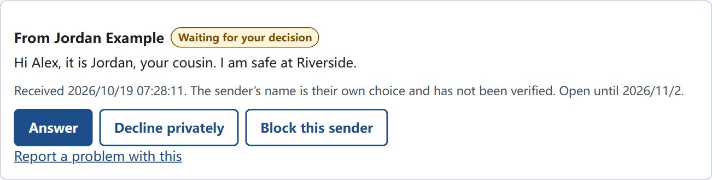
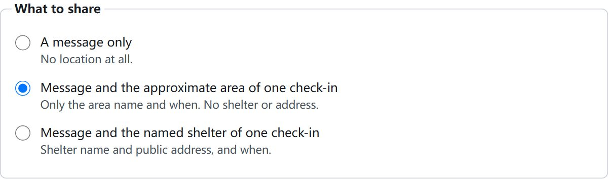
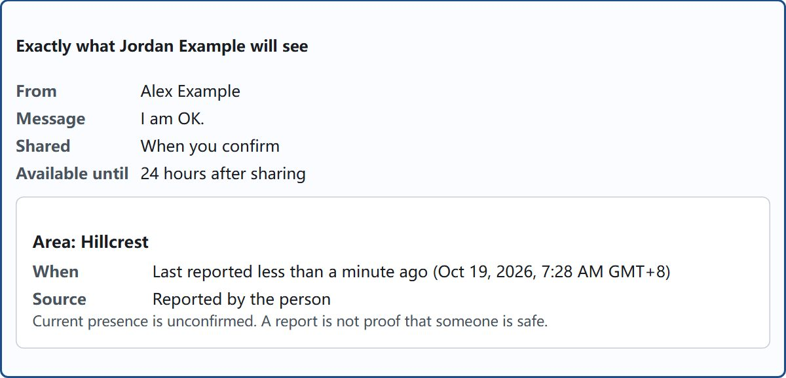
The preview shows exactly what the other person will receive, nothing more. Later check-ins are never included.
1.9 Read an answer someone shared with you
In Your requests, choose View response.
A check-in is a past report, not where they are now. Please do not pass it on.
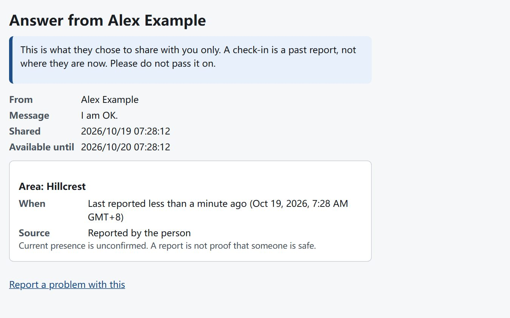
1.10 Stop sharing
Go to Sharing.
Choose Revoke next to a share, or Revoke everything shared. Access ends immediately.
On Sign in, choose "Forgot your password? Use your recovery secret".
Enter your username, your recovery secret and a new password, then Set new password.
Write down the new recovery secret shown next; the old one stops working. Other signed-in devices are signed out.
Without the recovery secret nobody can recover the account: not staff, not family. This protects you.
1.12 Delete your account
Go to Account → Delete my account.
Confirm your password and choose Permanently delete.
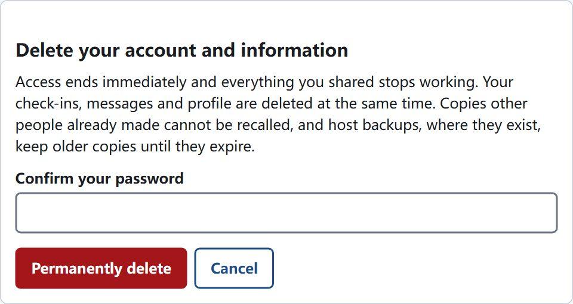
Access ends at once and your check-ins, messages and profile are deleted at the same time.
Part 2 · Without a phone, account or ID
Shelter staff can do everything in Part 1 with you. They act as themselves and only record your decisions.
2.1 Register at the shelter (intake)
Ask a staff member for an intake. Give any name you want to use; it is not checked against ID.
Say whether family may reach you with a code, and whether shelter teams may compare clues to find you.
You receive, on paper:
a reference card (a case reference like REF-ABCD-EFGH); it identifies your record but unlocks nothing;
a private assistance secret, given separately; staff ask for it on every later visit. Keep it private;
if you asked for one, a contact code to give to family.
2.2 On every later visit
Tell the staff member your assistance secret. The reference card alone is not enough.
They can act for you for 10 minutes. They choose "End assistance now" when you are done.
2.3 Look for someone
With their contact code: give it to the staff member. They send the request for you.
Without a code: tell staff which shelter they might be at and a few clues. Agree that the clues may be shared with that shelter's team.
On a later visit, staff check with you whether an answer arrived and read it with you.
2.4 When someone looks for you
On your next visit, staff show you requests that reached you.
You decide: answer (and what to share), decline privately, or block. Staff record exactly what you choose.
2.5 If something goes wrong
Lost your assistance secret? Staff open a manual escalation. A family member's word is not enough to give anyone access to your record.
Moving to another shelter? Ask staff to move your case. The new shelter accepts it only with your secret.
Want your information deleted? Ask staff during a verified visit.
Children and people who cannot agree for themselves are registered as a restricted referral: no matching or sharing through Reconnect; staff pass them to a specialised process.
Part 3 · Shelter staff and volunteers
Golden rules. Act as yourself and record the person's own decision. A claim to be family never gives access. Never write the assistance secret on the reference card. Use a restricted referral for children or anyone who cannot consent. Sign out when you leave the computer.
3.1 Your staff account and two-step sign-in
Your shelter's operator gives you staff access (Part 4).
The first time you sign in, enter your password again and choose Start setup.
Add the setup key to an authenticator app (for example Microsoft Authenticator or Google Authenticator), type the 6-digit code it shows and choose Verify.
Write down your staff recovery codes (each works once if you lose the app).
Every later sign-in asks for a fresh 6-digit code. Staff sessions end after 15 minutes without activity.
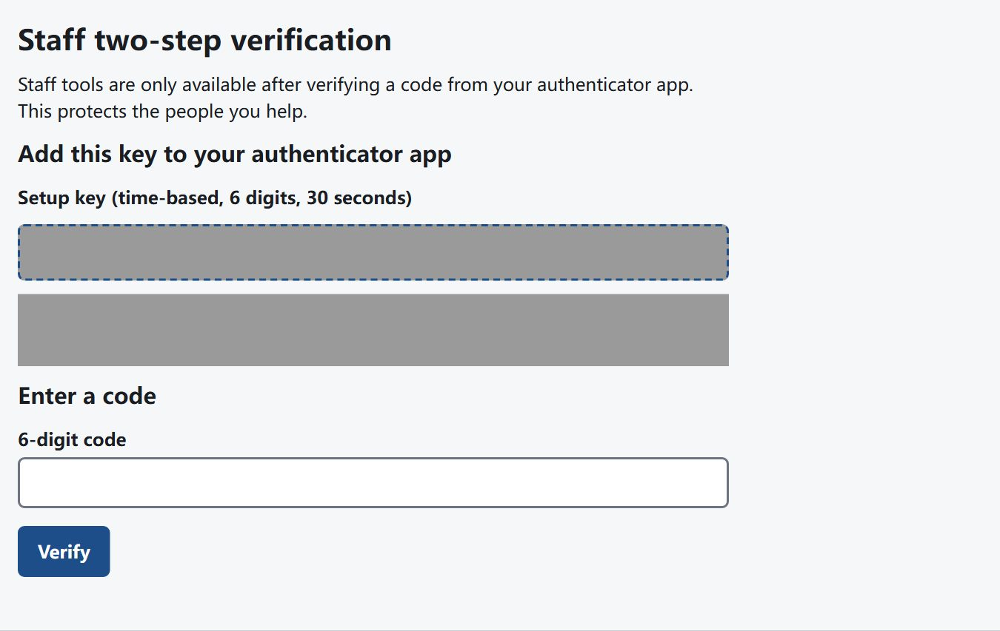
A random code is always refused. Five wrong codes lock sign-in for 15 minutes.
3.2 The Staff work page
Your assigned cases (with "Verified for this visit" or "Not verified this visit"), your matching tasks, and for coordinators the requests routed to the shelter, transfers and reviews.
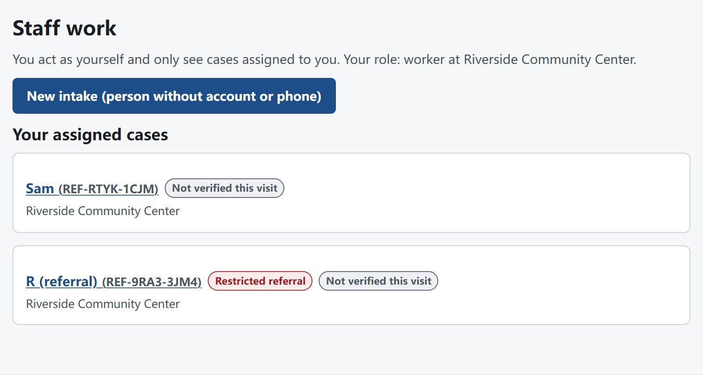
3.3 New intake (person without account or phone)
Choose New intake (person without account or phone).
Enter the name the person wants to use. Tick restricted referral only for a child or someone who cannot consent.
Record the person's choice under "Who may send this person requests?". For shelter-assisted matching you may add one distinguishing clue they agree to.
Optionally record a check-in here and create a contact code for their family.
Explain what is recorded, tick the consent box and choose Save intake.
Write the reference on the card. Give the assistance secret and the contact code on separate paper. They are shown only once.
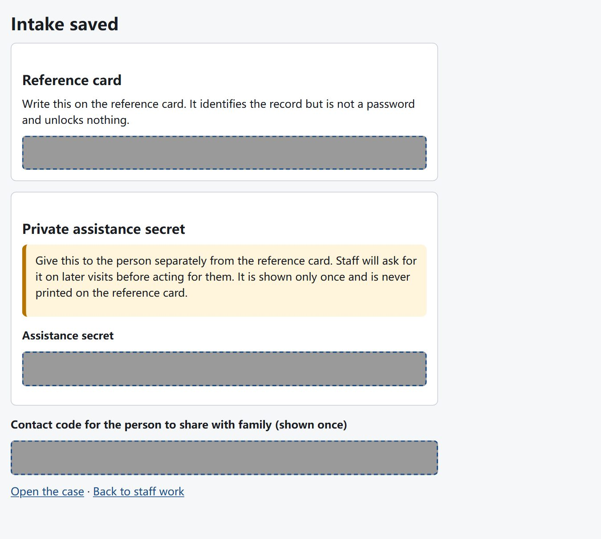
Reference card, private assistance secret and contact code (hidden here).
3.4 Verify the person at each visit
Open their case from Staff work.
Ask for their assistance secret, type it and choose Verify. Verification is yours only and lasts 10 minutes.
When you finish, choose End assistance now.
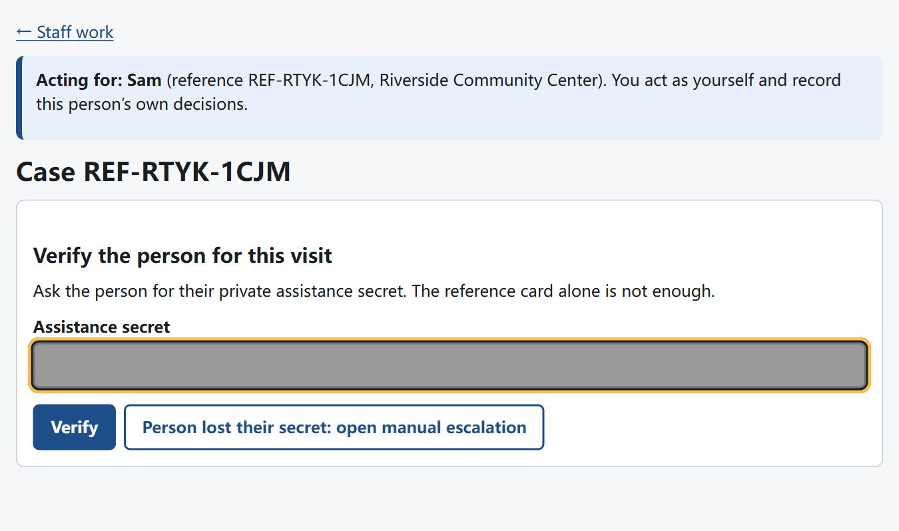
If the person lost the secret, choose "Person lost their secret: open manual escalation".
3.5 The case page
After verifying you can, with the person: record a check-in or "Mark as left"; see Requests for them and Requests they sent; see what they shared and revoke it; save their choice of who may send requests; create a contact code or replace the assistance secret; move the case to another shelter; and delete their information at their request.
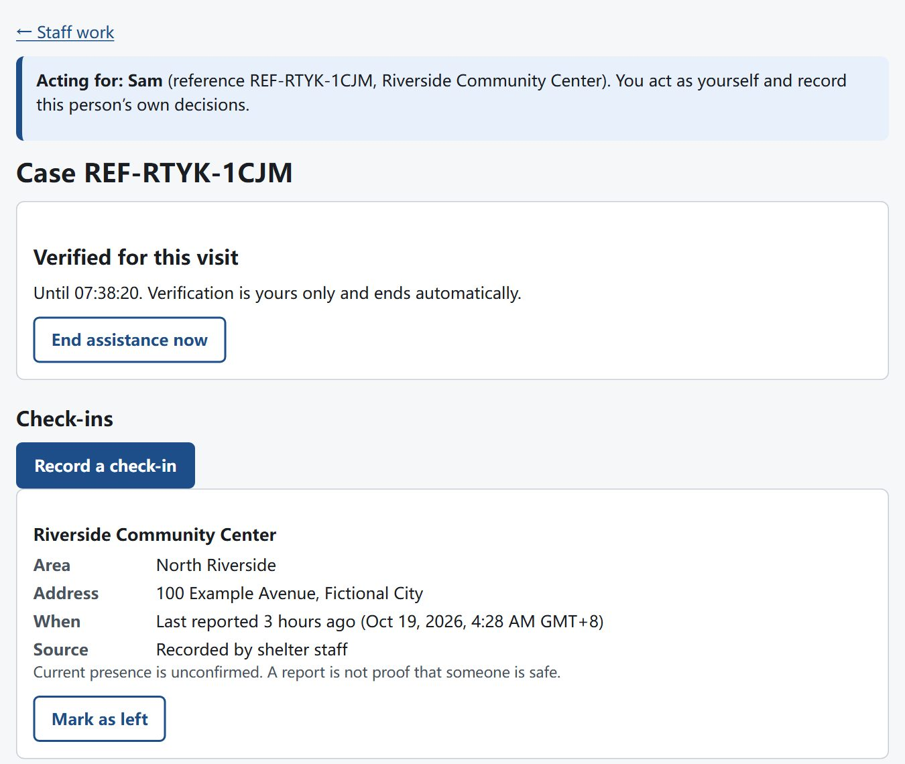
3.6 Send a request for the person
Choose Send a request for <name>.
Use the contact code they gave you, or choose Without a code, add their clues, pick one shelter and tick "The person agrees that the clues may be shared…".
Read the introduction back to the person, then Send private request.
Answers appear under "Requests <name> sent" → View answer with the person.
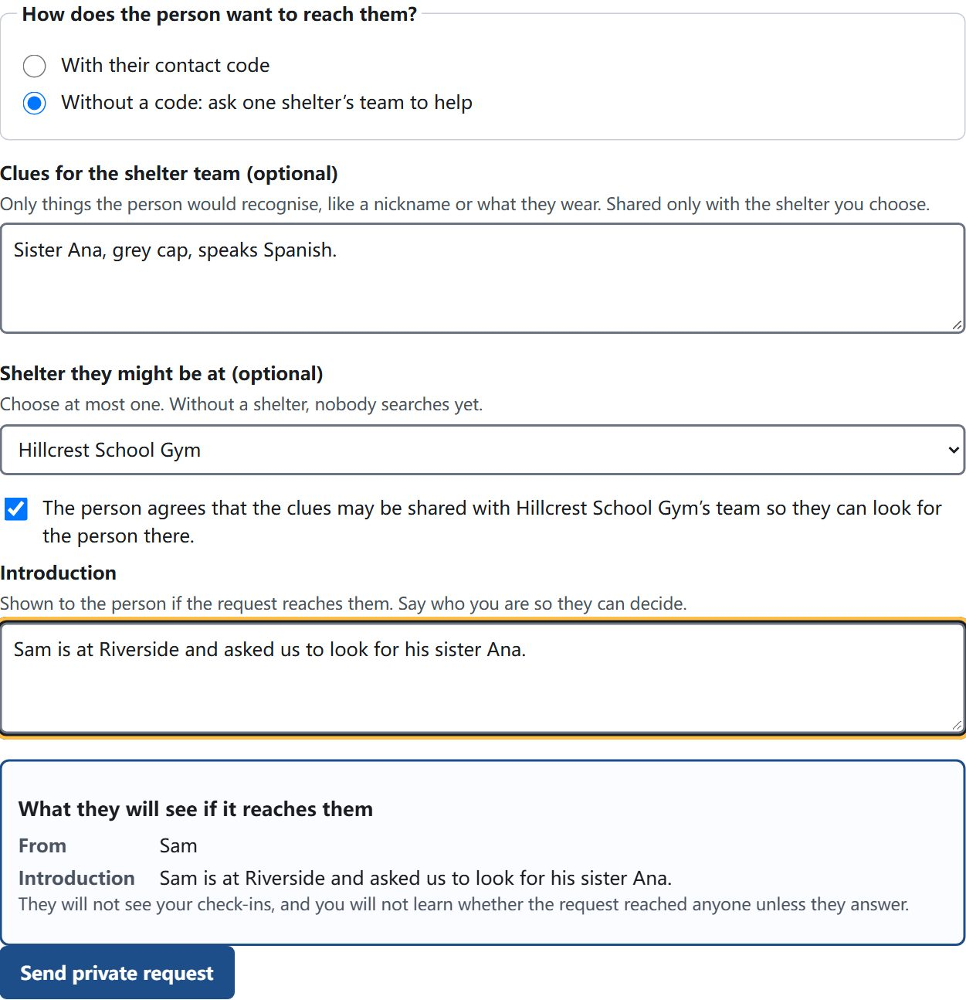
3.7 When a request arrives for the person
On their next verified visit, read the request with them.
Record their decision: Answer (they choose what to share), Decline privately or Block this sender.
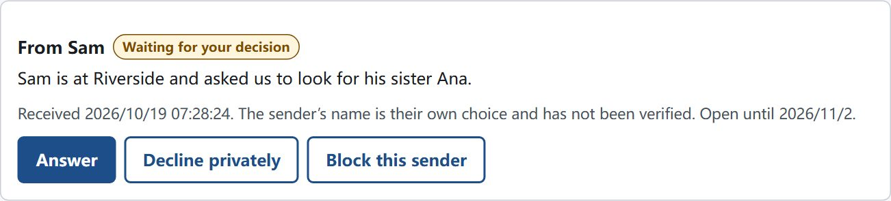
3.8 Coordinators: requests routed to your shelter
Under Requests routed to your shelter, read the clues.
Choose a worker and Assign matching task. You see clues, but no one's case data.
Also: review inactive cases ("Close case" or "Keep open 30 days"), accept transfers to your shelter, and ask your own cases for a better lead when a request has none.
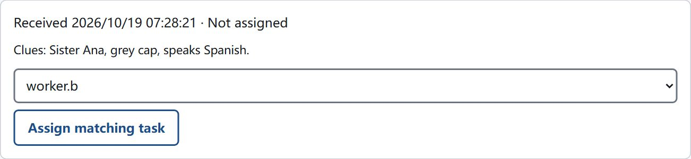
3.9 Workers: matching tasks
Choose Open matching task. Only people at your shelter who agreed to shelter-assisted matching are listed.
Compare the clues. If one person fits, choose Propose <name> and confirm. The request is delivered to that person, who decides.
If nobody fits, do nothing. The requester is never told who was considered.
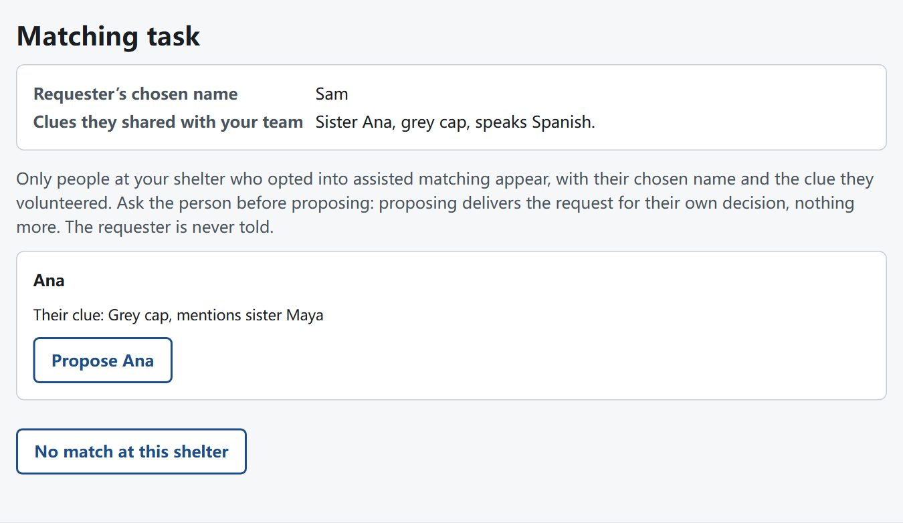
Part 4 · Creating a new staff member account (operators)
Staff access is never granted from the website. Only someone with access to the server's database settings can grant it.
4.1 Steps
The new staff member creates a normal account on the site (Part 1.1) and tells you the username.
On a computer with the project and its database settings, run (one line):
npm run staff:admin -- provision --username new.worker --role WORKER --shelter "Riverside Community Center" --confirm
Use --role COORDINATOR for a coordinator. The shelter name must match exactly.
The answer is provision: done. The person is signed out everywhere and, at the next sign-in, sets up two-step sign-in (3.1).
4.2 Other commands
Need
Command (add --confirm)
Remove someone's staff access
npm run staff:admin -- suspend-membership --username NAME
Block an account completely
npm run staff:admin -- suspend-account --username NAME
Unblock an account
npm run staff:admin -- reinstate-account --username NAME
Staff member lost their authenticator and recovery codes
npm run staff:admin -- reset-mfa --username NAME
Without --confirm nothing changes. Granting the same role twice is refused with a clear message.
Online demo note. The free demo host has no command line and its database refuses outside connections, so new staff accounts cannot be added there without a deliberate change. It has ready-made fictional staff accounts (worker.a, worker.a2 and coord.a at Riverside Community Center; worker.b and coord.b at Hillcrest School Gym). Ask the demo owner for access.
Words used
Name others will see
Any name or nickname you choose. It is not checked.
Check-in
A record of where you were at a stated time. History, not live location.
Contact code
A code you give to people you want to hear from. It routes a request to you; it is not a password.
Request
A private message from someone looking for you. You decide what happens.
Share / answer
What you choose to show one person, for 24 hours or 7 days.
Revoke
Stop sharing. Takes effect immediately.
Decline / block
Say no privately / stop future requests from that sender. They are never told.
Recovery secret
Your only way back in if you forget your password. Shown once.
Reference card
The paper card with your case reference. It unlocks nothing.
Assistance secret
Your private secret for staff visits. Keep it separate from the card.
Restricted referral
A record for a child or someone who cannot consent: no matching or sharing here.
Two-step verification
Staff sign-in with a password plus a 6-digit code from an authenticator app.
Reconnect is a challenge prototype with fictional data. It is not monitored, cannot send rescue and must not be used for real people.